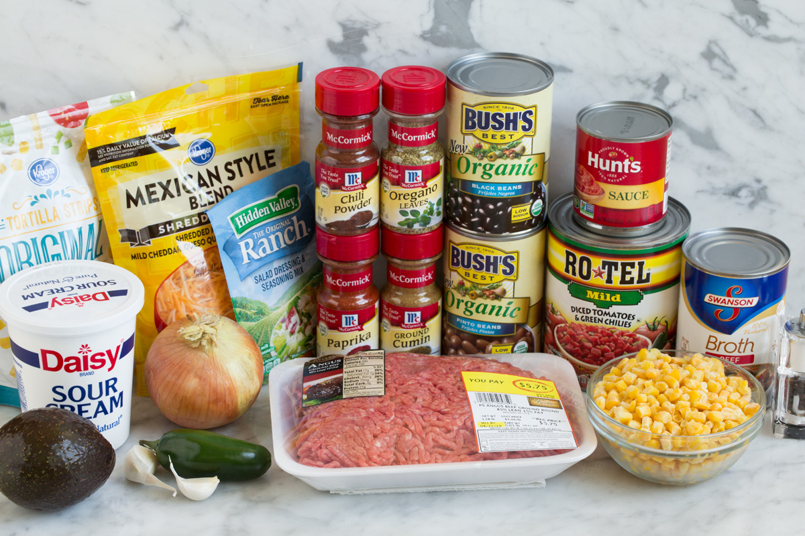
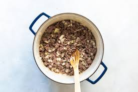

Recipe ingredients
- 1 pound ground beef
- 1 onion, chopped
- 1 (16 ounce) can chili beans, with liquid
- 1 (15 ounce) can kidney beans with liquid
- 1 (15 ounce) can whole kernel corn, with liquid
- 1 (8 ounce) can tomato sauce
- 2 cups water
- 2 (14.5 ounce) cans peeled and diced tomatoes
- 1 (4 ounce) can diced green chile peppers
- 1 (1.25 ounce) package taco seasoning mix

Recipe steps
- Gather all ingredients.
- In a medium skillet, cook the ground beef until browned over medium heat. Drain, and set aside.
- Place the ground beef, onion, chili beans, kidney beans, corn, tomato sauce, water, diced tomatoes, green chile peppers and taco seasoning mix in a slow cooker.
- Mix to blend, and cook on Low setting for 8 hours.
